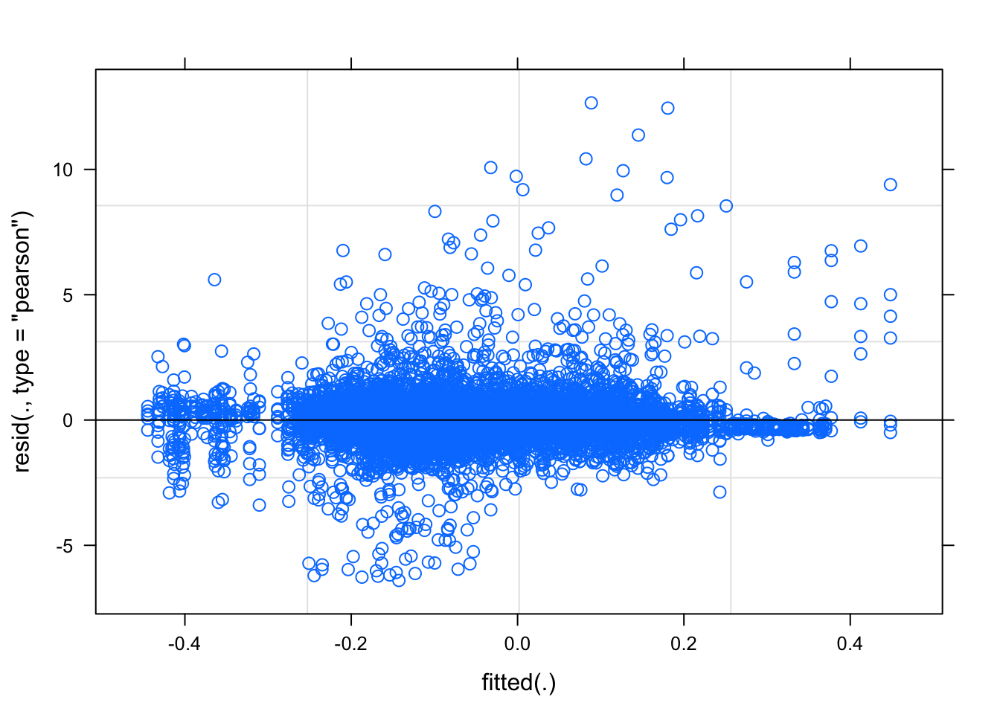
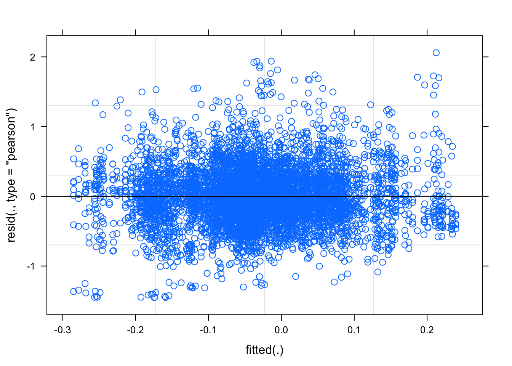
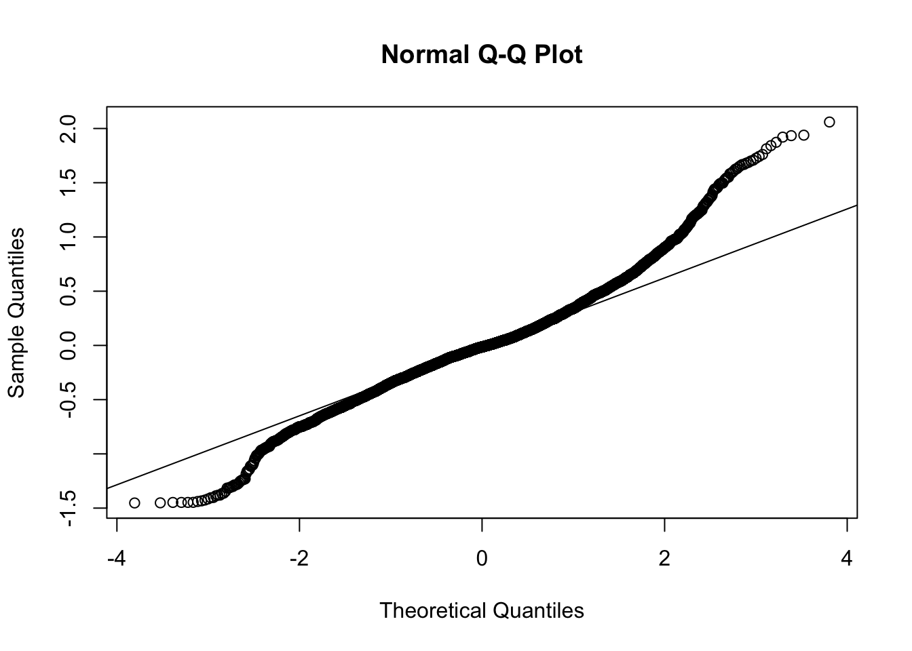

10_brow_analysis
Tue/15/Sep
Last updated: 2020-09-15
Checks: 5 2
Knit directory: RILEY_Hons/
This reproducible R Markdown analysis was created with workflowr (version 1.6.2). The Checks tab describes the reproducibility checks that were applied when the results were created. The Past versions tab lists the development history.
The R Markdown file has unstaged changes. To know which version of the R Markdown file created these results, you’ll want to first commit it to the Git repo. If you’re still working on the analysis, you can ignore this warning. When you’re finished, you can run wflow_publish to commit the R Markdown file and build the HTML.
Great job! The global environment was empty. Objects defined in the global environment can affect the analysis in your R Markdown file in unknown ways. For reproduciblity it’s best to always run the code in an empty environment.
The command set.seed(20200903) was run prior to running the code in the R Markdown file. Setting a seed ensures that any results that rely on randomness, e.g. subsampling or permutations, are reproducible.
Great job! Recording the operating system, R version, and package versions is critical for reproducibility.
- unnamed-chunk-14
- unnamed-chunk-21
- unnamed-chunk-25
- unnamed-chunk-31
- unnamed-chunk-38
- unnamed-chunk-6
- unnamed-chunk-9
To ensure reproducibility of the results, delete the cache directory 10_brow_analysis_cache and re-run the analysis. To have workflowr automatically delete the cache directory prior to building the file, set delete_cache = TRUE when running wflow_build() or wflow_publish().
Great job! Using relative paths to the files within your workflowr project makes it easier to run your code on other machines.
Great! You are using Git for version control. Tracking code development and connecting the code version to the results is critical for reproducibility.
The results in this page were generated with repository version 3a78481. See the Past versions tab to see a history of the changes made to the R Markdown and HTML files.
Note that you need to be careful to ensure that all relevant files for the analysis have been committed to Git prior to generating the results (you can use wflow_publish or wflow_git_commit). workflowr only checks the R Markdown file, but you know if there are other scripts or data files that it depends on. Below is the status of the Git repository when the results were generated:
Ignored files:
Ignored: .DS_Store
Ignored: .Rhistory
Ignored: .Rproj.user/
Ignored: Amy_childadult_raw_data/
Ignored: analysis/10_brow_analysis_cache/
Ignored: analysis/9_cheek_analysis_cache/
Ignored: analysis/figure/
Ignored: analysis/just messing around/
Ignored: analysis/working/
Ignored: data/adultsfaces/
Ignored: data/childfaces/
Ignored: data/clean_data/
Ignored: data/missing_values/
Ignored: data/testdata/
Unstaged changes:
Modified: analysis/10_brow_analysis.Rmd
Modified: analysis/9_cheek_analysis.Rmd
Modified: analysis/all_emo_adult_analysis.Rmd
Modified: analysis/all_emo_child_analysis.Rmd
Modified: analysis/all_emo_plotting.Rmd
Modified: analysis/index.Rmd
Note that any generated files, e.g. HTML, png, CSS, etc., are not included in this status report because it is ok for generated content to have uncommitted changes.
These are the previous versions of the repository in which changes were made to the R Markdown (analysis/10_brow_analysis.Rmd) and HTML (docs/10_brow_analysis.html) files. If you’ve configured a remote Git repository (see ?wflow_git_remote), click on the hyperlinks in the table below to view the files as they were in that past version.
| File | Version | Author | Date | Message |
|---|---|---|---|---|
| Rmd | 75150a3 | RileyFerguson | 2020-09-14 | riley updating |
| html | 75150a3 | RileyFerguson | 2020-09-14 | riley updating |
| html | a258016 | RileyFerguson | 2020-09-11 | Build site. |
| Rmd | 881fbe9 | RileyFerguson | 2020-09-11 | wflow_publish(“analysis/10_brow_analysis.Rmd”) |
| html | fa74f81 | RileyFerguson | 2020-09-08 | Build site. |
| Rmd | d52ded6 | RileyFerguson | 2020-09-08 | riley analysing |
| html | 0f46834 | RileyFerguson | 2020-09-07 | Build site. |
| Rmd | 6eee547 | RileyFerguson | 2020-09-07 | adding brow analysis |
load packages
library(tidyverse)
library(here)
library(lme4)
library(lmerTest)
library(broom.mixed)
library(pixiedust)
library(beepr)
knitr::opts_chunk$set(autodep = TRUE)read in data
df <- read_csv(here::here("data", "adult_child_combined", "zdiff_binscreened2.csv"))Parsed with column specification:
cols(
pp_no = col_character(),
model = col_character(),
emotion = col_double(),
trial = col_character(),
muscle = col_character(),
bin = col_character(),
zdiff = col_double(),
emo = col_character()
)fix data types
The emotion variable below is numbers so not sure how the emotion %in% c(happy, angry) was working. Add emo variable with emotion labels
df$emotion <- as.factor(df$emotion)
levels(df$emotion)[1] "121" "131" "232" "323" "424" "434" "525" "535"df <- df %>%
mutate(emo = case_when(emotion == 121 ~ "happy",
emotion == 323 ~ "angry",
emotion == 424 ~ "fear",
emotion == 525 ~ "sad",
emotion == 131 ~ "happy",
emotion == 232 ~ "angry",
emotion == 434 ~ "fear",
emotion == 535 ~ "sad"))
df <- df %>% mutate_if(is.character, as.factor)
glimpse(df)Rows: 61,480
Columns: 8
$ pp_no <fct> pp401, pp401, pp401, pp401, pp401, pp401, pp401, pp401, …
$ model <fct> adult, adult, adult, adult, adult, adult, adult, adult, …
$ emotion <fct> 131, 131, 131, 131, 131, 131, 131, 131, 131, 131, 131, 1…
$ trial <fct> trial1, trial1, trial1, trial1, trial1, trial1, trial1, …
$ muscle <fct> brow, brow, brow, brow, brow, brow, brow, brow, brow, br…
$ bin <fct> diff_bin1, diff_bin10, diff_bin2, diff_bin3, diff_bin4, …
$ zdiff <dbl> 0.133992486, -0.672344142, 0.034300886, -0.126145600, -0…
$ emo <fct> happy, happy, happy, happy, happy, happy, happy, happy, …BROW happy-angry child
Make brow HA child df
just happy/angry child face for cheek
HA_child_brow <- df %>%
filter(emo %in% c("happy", "angry")) %>%
filter(muscle == "brow") %>%
filter(model == "child") %>%
arrange(pp_no, emotion, trial, bin)
glimpse(HA_child_brow)Rows: 7,570
Columns: 8
$ pp_no <fct> pp401, pp401, pp401, pp401, pp401, pp401, pp401, pp401, …
$ model <fct> child, child, child, child, child, child, child, child, …
$ emotion <fct> 121, 121, 121, 121, 121, 121, 121, 121, 121, 121, 121, 1…
$ trial <fct> trial1, trial1, trial1, trial1, trial1, trial1, trial1, …
$ muscle <fct> brow, brow, brow, brow, brow, brow, brow, brow, brow, br…
$ bin <fct> diff_bin1, diff_bin10, diff_bin2, diff_bin3, diff_bin4, …
$ zdiff <dbl> -0.66832501, 5.03682881, 0.31704396, 0.52214752, 0.54634…
$ emo <fct> happy, happy, happy, happy, happy, happy, happy, happy, …Fix factor levels
HA_child_brow$emo <- fct_relevel(HA_child_brow$emo, c("happy", "angry"))
levels(HA_child_brow$emo)[1] "happy" "angry" "fear" "sad" HA_child_brow$bin <- fct_relevel(HA_child_brow$bin, c("diff_bin1", "diff_bin2", "diff_bin3", "diff_bin4", "diff_bin5", "diff_bin6", "diff_bin7", "diff_bin8", "diff_bin9", "diff_bin10"))
levels(HA_child_brow$bin) [1] "diff_bin1" "diff_bin2" "diff_bin3" "diff_bin4" "diff_bin5"
[6] "diff_bin6" "diff_bin7" "diff_bin8" "diff_bin9" "diff_bin10"Fit model 1
This is the model structure we will use to check assumptions. Include all predicted fixed effects and simplest random effect structure (just intercepts for participant). In all likelihood this model with zscores as DV will not meet assumptions and we will need to transform data.
child_brow_lm <- lmer(zdiff ~ emo + bin + emo*bin + (1|pp_no), data = HA_child_brow, REML = FALSE)check assumptions
plot(child_brow_lm)
| Version | Author | Date |
|---|---|---|
| 0f46834 | RileyFerguson | 2020-09-07 |
qqnorm(resid(child_brow_lm))
qqline(resid(child_brow_lm))
| Version | Author | Date |
|---|---|---|
| 0f46834 | RileyFerguson | 2020-09-07 |
As suscepted, need to transform to correct normality.
compute log_modulus
HA_child_brow <- HA_child_brow %>%
mutate(log_modulus_new = sign(zdiff) * log(1+abs(zdiff)))try fit model again
child_brow_lm_1 <- lmer(log_modulus_new ~ emo + bin + emo*bin + (1|pp_no), data = HA_child_brow, REML = FALSE)check assumptions again
plot(child_brow_lm_1)
| Version | Author | Date |
|---|---|---|
| 0f46834 | RileyFerguson | 2020-09-07 |
qqnorm(resid(child_brow_lm_1))
qqline(resid(child_brow_lm_1))
| Version | Author | Date |
|---|---|---|
| 0f46834 | RileyFerguson | 2020-09-07 |
get anova, summary and tidy
anova(child_brow_lm_1)Type III Analysis of Variance Table with Satterthwaite's method
Sum Sq Mean Sq NumDF DenDF F value Pr(>F)
emo 0.33916 0.33916 1 6872.0 1.6023 0.2056
bin 1.50270 0.16697 9 6868.4 0.7888 0.6268
emo:bin 2.32105 0.25789 9 6868.4 1.2184 0.2783summary(child_brow_lm_1)Linear mixed model fit by maximum likelihood . t-tests use
Satterthwaite's method [lmerModLmerTest]
Formula: log_modulus_new ~ emo + bin + emo * bin + (1 | pp_no)
Data: HA_child_brow
AIC BIC logLik deviance df.resid
9031.6 9182.1 -4493.8 8987.6 6895
Scaled residuals:
Min 1Q Median 3Q Max
-4.1865 -0.5404 -0.0594 0.4779 5.5564
Random effects:
Groups Name Variance Std.Dev.
pp_no (Intercept) 0.009642 0.09819
Residual 0.211669 0.46007
Number of obs: 6917, groups: pp_no, 49
Fixed effects:
Estimate Std. Error df t value Pr(>|t|)
(Intercept) -5.132e-02 2.856e-02 6.023e+02 -1.797 0.0729 .
emoangry -7.385e-03 3.514e-02 6.869e+03 -0.210 0.8336
bindiff_bin2 -1.415e-02 3.514e-02 6.869e+03 -0.403 0.6871
bindiff_bin3 1.528e-02 3.498e-02 6.868e+03 0.437 0.6624
bindiff_bin4 -5.485e-03 3.506e-02 6.869e+03 -0.156 0.8757
bindiff_bin5 2.673e-02 3.496e-02 6.868e+03 0.765 0.4445
bindiff_bin6 1.150e-02 3.498e-02 6.868e+03 0.329 0.7423
bindiff_bin7 2.376e-02 3.498e-02 6.868e+03 0.679 0.4971
bindiff_bin8 1.359e-02 3.508e-02 6.869e+03 0.387 0.6984
bindiff_bin9 -1.216e-02 3.506e-02 6.868e+03 -0.347 0.7287
bindiff_bin10 -2.993e-02 3.508e-02 6.869e+03 -0.853 0.3936
emoangry:bindiff_bin2 4.674e-02 4.967e-02 6.869e+03 0.941 0.3467
emoangry:bindiff_bin3 -1.277e-02 4.951e-02 6.868e+03 -0.258 0.7965
emoangry:bindiff_bin4 3.401e-03 4.949e-02 6.869e+03 0.069 0.9452
emoangry:bindiff_bin5 -2.747e-02 4.953e-02 6.868e+03 -0.555 0.5792
emoangry:bindiff_bin6 -7.843e-03 4.949e-02 6.868e+03 -0.158 0.8741
emoangry:bindiff_bin7 8.666e-03 4.942e-02 6.868e+03 0.175 0.8608
emoangry:bindiff_bin8 7.431e-02 4.965e-02 6.868e+03 1.497 0.1345
emoangry:bindiff_bin9 4.235e-02 4.962e-02 6.868e+03 0.853 0.3934
emoangry:bindiff_bin10 8.665e-02 4.980e-02 6.869e+03 1.740 0.0819 .
---
Signif. codes: 0 '***' 0.001 '**' 0.01 '*' 0.05 '.' 0.1 ' ' 1
Correlation matrix not shown by default, as p = 20 > 12.
Use print(x, correlation=TRUE) or
vcov(x) if you need ittidy_child_brow1 <- tidy(child_brow_lm_1)fit model 2 (slopes for emotion)
child_brow_lm_2 <- lmer(log_modulus_new ~ emo + bin + emo*bin + (1 + emo|pp_no), data = HA_child_brow, REML = FALSE)get anova, summary and tidy
anova(child_brow_lm_2)Type III Analysis of Variance Table with Satterthwaite's method
Sum Sq Mean Sq NumDF DenDF F value Pr(>F)
emo 0.05501 0.055008 1 49.0 0.2690 0.6063
bin 1.49389 0.165988 9 6819.5 0.8118 0.6053
emo:bin 2.29256 0.254729 9 6819.5 1.2458 0.2617summary(child_brow_lm_2)Linear mixed model fit by maximum likelihood . t-tests use
Satterthwaite's method [lmerModLmerTest]
Formula: log_modulus_new ~ emo + bin + emo * bin + (1 + emo | pp_no)
Data: HA_child_brow
AIC BIC logLik deviance df.resid
8882.3 9046.5 -4417.1 8834.3 6893
Scaled residuals:
Min 1Q Median 3Q Max
-3.6701 -0.5510 -0.0571 0.4794 5.6813
Random effects:
Groups Name Variance Std.Dev. Corr
pp_no (Intercept) 0.01172 0.1083
emoangry 0.02864 0.1692 -0.49
Residual 0.20447 0.4522
Number of obs: 6917, groups: pp_no, 49
Fixed effects:
Estimate Std. Error df t value Pr(>|t|)
(Intercept) -5.285e-02 2.894e-02 3.748e+02 -1.826 0.0686 .
emoangry -8.353e-03 4.216e-02 3.078e+02 -0.198 0.8431
bindiff_bin2 -1.318e-02 3.454e-02 6.821e+03 -0.382 0.7028
bindiff_bin3 1.611e-02 3.439e-02 6.820e+03 0.468 0.6396
bindiff_bin4 -4.837e-03 3.446e-02 6.820e+03 -0.140 0.8884
bindiff_bin5 2.684e-02 3.436e-02 6.820e+03 0.781 0.4348
bindiff_bin6 1.263e-02 3.439e-02 6.820e+03 0.367 0.7134
bindiff_bin7 2.390e-02 3.439e-02 6.820e+03 0.695 0.4871
bindiff_bin8 1.403e-02 3.449e-02 6.820e+03 0.407 0.6841
bindiff_bin9 -1.170e-02 3.446e-02 6.820e+03 -0.340 0.7341
bindiff_bin10 -2.931e-02 3.449e-02 6.820e+03 -0.850 0.3955
emoangry:bindiff_bin2 4.708e-02 4.883e-02 6.820e+03 0.964 0.3350
emoangry:bindiff_bin3 -1.152e-02 4.866e-02 6.819e+03 -0.237 0.8129
emoangry:bindiff_bin4 4.588e-03 4.865e-02 6.820e+03 0.094 0.9249
emoangry:bindiff_bin5 -2.596e-02 4.868e-02 6.820e+03 -0.533 0.5939
emoangry:bindiff_bin6 -7.613e-03 4.865e-02 6.820e+03 -0.156 0.8757
emoangry:bindiff_bin7 9.267e-03 4.858e-02 6.819e+03 0.191 0.8487
emoangry:bindiff_bin8 7.523e-02 4.881e-02 6.820e+03 1.542 0.1232
emoangry:bindiff_bin9 4.356e-02 4.877e-02 6.820e+03 0.893 0.3718
emoangry:bindiff_bin10 8.644e-02 4.895e-02 6.820e+03 1.766 0.0775 .
---
Signif. codes: 0 '***' 0.001 '**' 0.01 '*' 0.05 '.' 0.1 ' ' 1
Correlation matrix not shown by default, as p = 20 > 12.
Use print(x, correlation=TRUE) or
vcov(x) if you need ittidy_child_brow2 <- tidy(child_brow_lm_2)check fit
AIC(child_brow_lm_1)[1] 9031.58AIC(child_brow_lm_2)[1] 8882.276anova(child_brow_lm_1, child_brow_lm_2)Data: HA_child_brow
Models:
child_brow_lm_1: log_modulus_new ~ emo + bin + emo * bin + (1 | pp_no)
child_brow_lm_2: log_modulus_new ~ emo + bin + emo * bin + (1 + emo | pp_no)
Df AIC BIC logLik deviance Chisq Chi Df Pr(>Chisq)
child_brow_lm_1 22 9031.6 9182.1 -4493.8 8987.6
child_brow_lm_2 24 8882.3 9046.5 -4417.1 8834.3 153.3 2 < 2.2e-16
child_brow_lm_1
child_brow_lm_2 ***
---
Signif. codes: 0 '***' 0.001 '**' 0.01 '*' 0.05 '.' 0.1 ' ' 1model take home - the model with the addition of a slope for emotion provides a better fit for the data than the model without
fit model 3 (slope for emotion and bin) - failed to converge
child_brow_lm_3 <- lmer(log_modulus_new ~ emo + bin + emo*bin + (1 + emo + bin|pp_no), data = HA_child_brow, REML = FALSE)Child model take home
model 3 failed to converge, model 2 provides the best fit
get confidence intervals
confint.merMod(child_brow_lm_2, level = 0.95)Computing profile confidence intervals ... 2.5 % 97.5 %
.sig01 0.084672318 0.139515719
.sig02 -0.703170029 -0.200065717
.sig03 0.133983953 0.216712166
.sigma 0.444702699 0.459883939
(Intercept) -0.109735971 0.004004094
emoangry -0.091264389 0.074547732
bindiff_bin2 -0.080882391 0.054526177
bindiff_bin3 -0.051302555 0.083511474
bindiff_bin4 -0.072390574 0.062716856
bindiff_bin5 -0.040521191 0.094199580
bindiff_bin6 -0.054777353 0.080036581
bindiff_bin7 -0.043510198 0.091305200
bindiff_bin8 -0.053570622 0.081633271
bindiff_bin9 -0.079256462 0.055847051
bindiff_bin10 -0.096909924 0.038296489
emoangry:bindiff_bin2 -0.048633718 0.142789174
emoangry:bindiff_bin3 -0.106914202 0.083874310
emoangry:bindiff_bin4 -0.090772569 0.099949226
emoangry:bindiff_bin5 -0.121392109 0.069475533
emoangry:bindiff_bin6 -0.102973601 0.087748809
emoangry:bindiff_bin7 -0.085956667 0.104491347
emoangry:bindiff_bin8 -0.020435380 0.170906349
emoangry:bindiff_bin9 -0.052045893 0.139157946
emoangry:bindiff_bin10 -0.009517046 0.182406424make output table
child_really_nice_table <- dust(child_brow_lm_2) %>%
sprinkle(col = 4:7, round = 3, pad = 15, halign = "center", valign = "middle") %>%
sprinkle(col = 8, fn = quote(pvalString(value)), halign = "center", valign = "middle") %>%
sprinkle_colnames(term = "Term",
estimate = "Estimate",
std.error = "SE",
statistic = "t statistic",
p.value = "P-value") %>%
sprinkle(bg_pattern_by = "rows") %>%
sprinkle_print_method("html")
child_really_nice_table| effect | group | Term | Estimate | SE | t statistic | df | P-value |
|---|---|---|---|---|---|---|---|
| fixed | NA | (Intercept) | -0.053 | 0.029 | -1.826 | 374.772 | 0.069 |
| fixed | NA | emoangry | -0.008 | 0.042 | -0.198 | 307.796 | 0.84 |
| fixed | NA | bindiff_bin2 | -0.013 | 0.035 | -0.382 | 6820.522 | 0.7 |
| fixed | NA | bindiff_bin3 | 0.016 | 0.034 | 0.468 | 6819.697 | 0.64 |
| fixed | NA | bindiff_bin4 | -0.005 | 0.034 | -0.14 | 6820.021 | 0.89 |
| fixed | NA | bindiff_bin5 | 0.027 | 0.034 | 0.781 | 6819.818 | 0.43 |
| fixed | NA | bindiff_bin6 | 0.013 | 0.034 | 0.367 | 6819.714 | 0.71 |
| fixed | NA | bindiff_bin7 | 0.024 | 0.034 | 0.695 | 6819.829 | 0.49 |
| fixed | NA | bindiff_bin8 | 0.014 | 0.034 | 0.407 | 6819.995 | 0.68 |
| fixed | NA | bindiff_bin9 | -0.012 | 0.034 | -0.34 | 6819.816 | 0.73 |
| fixed | NA | bindiff_bin10 | -0.029 | 0.034 | -0.85 | 6820.097 | 0.4 |
| fixed | NA | emoangry:bindiff_bin2 | 0.047 | 0.049 | 0.964 | 6820.012 | 0.33 |
| fixed | NA | emoangry:bindiff_bin3 | -0.012 | 0.049 | -0.237 | 6819.451 | 0.81 |
| fixed | NA | emoangry:bindiff_bin4 | 0.005 | 0.049 | 0.094 | 6819.566 | 0.92 |
| fixed | NA | emoangry:bindiff_bin5 | -0.026 | 0.049 | -0.533 | 6819.667 | 0.59 |
| fixed | NA | emoangry:bindiff_bin6 | -0.008 | 0.049 | -0.156 | 6819.533 | 0.88 |
| fixed | NA | emoangry:bindiff_bin7 | 0.009 | 0.049 | 0.191 | 6819.5 | 0.85 |
| fixed | NA | emoangry:bindiff_bin8 | 0.075 | 0.049 | 1.542 | 6819.604 | 0.12 |
| fixed | NA | emoangry:bindiff_bin9 | 0.044 | 0.049 | 0.893 | 6819.582 | 0.37 |
| fixed | NA | emoangry:bindiff_bin10 | 0.086 | 0.049 | 1.766 | 6819.742 | 0.077 |
| ran_pars | pp_no | sd__(Intercept) | 0.108 | NA | NA | NA | NA |
| ran_pars | pp_no | cor__(Intercept).emoangry | -0.493 | NA | NA | NA | NA |
| ran_pars | pp_no | sd__emoangry | 0.169 | NA | NA | NA | NA |
| ran_pars | Residual | sd__Observation | 0.452 | NA | NA | NA | NA |
BROW happy-angry adult
Make brow HA adult df
just happy/angry child face for cheek
HA_adult_brow <- df %>%
filter(emo %in% c("happy", "angry")) %>%
filter(muscle == "brow") %>%
filter(model == "adult") %>%
arrange(pp_no, emotion, trial, bin)
glimpse(HA_adult_brow)Rows: 7,770
Columns: 8
$ pp_no <fct> pp401, pp401, pp401, pp401, pp401, pp401, pp401, pp401, …
$ model <fct> adult, adult, adult, adult, adult, adult, adult, adult, …
$ emotion <fct> 131, 131, 131, 131, 131, 131, 131, 131, 131, 131, 131, 1…
$ trial <fct> trial1, trial1, trial1, trial1, trial1, trial1, trial1, …
$ muscle <fct> brow, brow, brow, brow, brow, brow, brow, brow, brow, br…
$ bin <fct> diff_bin1, diff_bin10, diff_bin2, diff_bin3, diff_bin4, …
$ zdiff <dbl> 0.13399249, -0.67234414, 0.03430089, -0.12614560, -0.198…
$ emo <fct> happy, happy, happy, happy, happy, happy, happy, happy, …Fix factor levels
HA_adult_brow$emo <- fct_relevel(HA_adult_brow$emo, c("happy", "angry"))
levels(HA_adult_brow$emo)[1] "happy" "angry" "fear" "sad" HA_adult_brow$bin <- fct_relevel(HA_adult_brow$bin, c("diff_bin1", "diff_bin2", "diff_bin3", "diff_bin4", "diff_bin5", "diff_bin6", "diff_bin7", "diff_bin8", "diff_bin9", "diff_bin10"))
levels(HA_adult_brow$bin) [1] "diff_bin1" "diff_bin2" "diff_bin3" "diff_bin4" "diff_bin5"
[6] "diff_bin6" "diff_bin7" "diff_bin8" "diff_bin9" "diff_bin10"fit model 1
HA_adult_brow <- HA_adult_brow %>%
mutate(log_modulus_new = sign(zdiff) * log(1+abs(zdiff)))try fit model again
adult_brow_lm_1 <- lmer(log_modulus_new ~ emo + bin + emo*bin + (1|pp_no), data = HA_adult_brow, REML = FALSE)check assumptions again
plot(adult_brow_lm_1)
| Version | Author | Date |
|---|---|---|
| fa74f81 | RileyFerguson | 2020-09-08 |
qqnorm(resid(adult_brow_lm_1))
qqline(resid(adult_brow_lm_1))
| Version | Author | Date |
|---|---|---|
| fa74f81 | RileyFerguson | 2020-09-08 |
get anova, summary and tidy
anova(adult_brow_lm_1)Type III Analysis of Variance Table with Satterthwaite's method
Sum Sq Mean Sq NumDF DenDF F value Pr(>F)
emo 0.49016 0.49016 1 7031.5 3.0959 0.07853 .
bin 0.36741 0.04082 9 7029.2 0.2578 0.98531
emo:bin 0.75846 0.08427 9 7029.1 0.5323 0.85211
---
Signif. codes: 0 '***' 0.001 '**' 0.01 '*' 0.05 '.' 0.1 ' ' 1summary(adult_brow_lm_1)Linear mixed model fit by maximum likelihood . t-tests use
Satterthwaite's method [lmerModLmerTest]
Formula: log_modulus_new ~ emo + bin + emo * bin + (1 | pp_no)
Data: HA_adult_brow
AIC BIC logLik deviance df.resid
7194.8 7345.8 -3575.4 7150.8 7057
Scaled residuals:
Min 1Q Median 3Q Max
-3.6506 -0.5718 -0.0362 0.5062 5.1770
Random effects:
Groups Name Variance Std.Dev.
pp_no (Intercept) 0.008757 0.09358
Residual 0.158324 0.39790
Number of obs: 7079, groups: pp_no, 50
Fixed effects:
Estimate Std. Error df t value Pr(>|t|)
(Intercept) -6.270e-03 2.503e-02 4.843e+02 -0.251 0.802
emoangry -4.367e-02 3.013e-02 7.029e+03 -1.450 0.147
bindiff_bin2 -2.847e-02 2.998e-02 7.029e+03 -0.950 0.342
bindiff_bin3 -2.207e-02 2.995e-02 7.029e+03 -0.737 0.461
bindiff_bin4 -5.615e-03 2.985e-02 7.029e+03 -0.188 0.851
bindiff_bin5 -4.599e-03 3.002e-02 7.029e+03 -0.153 0.878
bindiff_bin6 -2.007e-02 2.989e-02 7.029e+03 -0.672 0.502
bindiff_bin7 -1.790e-02 3.002e-02 7.029e+03 -0.596 0.551
bindiff_bin8 -2.432e-02 3.000e-02 7.029e+03 -0.811 0.418
bindiff_bin9 -1.917e-02 2.995e-02 7.029e+03 -0.640 0.522
bindiff_bin10 -3.822e-02 2.998e-02 7.029e+03 -1.275 0.202
emoangry:bindiff_bin2 6.173e-02 4.254e-02 7.029e+03 1.451 0.147
emoangry:bindiff_bin3 3.603e-02 4.245e-02 7.029e+03 0.849 0.396
emoangry:bindiff_bin4 -1.011e-02 4.229e-02 7.029e+03 -0.239 0.811
emoangry:bindiff_bin5 5.641e-03 4.245e-02 7.029e+03 0.133 0.894
emoangry:bindiff_bin6 3.324e-02 4.235e-02 7.029e+03 0.785 0.433
emoangry:bindiff_bin7 3.840e-02 4.241e-02 7.029e+03 0.906 0.365
emoangry:bindiff_bin8 4.112e-02 4.248e-02 7.029e+03 0.968 0.333
emoangry:bindiff_bin9 3.481e-02 4.250e-02 7.029e+03 0.819 0.413
emoangry:bindiff_bin10 2.932e-02 4.247e-02 7.029e+03 0.690 0.490
Correlation matrix not shown by default, as p = 20 > 12.
Use print(x, correlation=TRUE) or
vcov(x) if you need ittidy_adult_brow1 <- tidy(adult_brow_lm_1)fit model 2 (slope for emotion)
adult_brow_lm_2 <- lmer(log_modulus_new ~ emo + bin + emo*bin + (1 + emo|pp_no), data = HA_adult_brow, REML = FALSE)get anova, summary, and tidy
anova(adult_brow_lm_2)Type III Analysis of Variance Table with Satterthwaite's method
Sum Sq Mean Sq NumDF DenDF F value Pr(>F)
emo 0.06375 0.063750 1 49.8 0.4214 0.5192
bin 0.34926 0.038806 9 6979.1 0.2565 0.9856
emo:bin 0.76494 0.084994 9 6979.1 0.5618 0.8293summary(adult_brow_lm_2)Linear mixed model fit by maximum likelihood . t-tests use
Satterthwaite's method [lmerModLmerTest]
Formula: log_modulus_new ~ emo + bin + emo * bin + (1 + emo | pp_no)
Data: HA_adult_brow
AIC BIC logLik deviance df.resid
6979.4 7144.2 -3465.7 6931.4 7055
Scaled residuals:
Min 1Q Median 3Q Max
-3.5937 -0.5733 -0.0402 0.5153 4.8725
Random effects:
Groups Name Variance Std.Dev. Corr
pp_no (Intercept) 0.01253 0.1119
emoangry 0.02837 0.1684 -0.57
Residual 0.15128 0.3890
Number of obs: 7079, groups: pp_no, 50
Fixed effects:
Estimate Std. Error df t value Pr(>|t|)
(Intercept) -7.070e-03 2.611e-02 2.651e+02 -0.271 0.787
emoangry -4.245e-02 3.788e-02 2.378e+02 -1.121 0.264
bindiff_bin2 -2.780e-02 2.931e-02 6.980e+03 -0.949 0.343
bindiff_bin3 -2.092e-02 2.928e-02 6.979e+03 -0.714 0.475
bindiff_bin4 -4.441e-03 2.918e-02 6.979e+03 -0.152 0.879
bindiff_bin5 -3.463e-03 2.934e-02 6.979e+03 -0.118 0.906
bindiff_bin6 -1.910e-02 2.922e-02 6.979e+03 -0.654 0.513
bindiff_bin7 -1.748e-02 2.935e-02 6.979e+03 -0.596 0.552
bindiff_bin8 -2.170e-02 2.933e-02 6.980e+03 -0.740 0.459
bindiff_bin9 -1.860e-02 2.928e-02 6.980e+03 -0.635 0.525
bindiff_bin10 -3.677e-02 2.930e-02 6.979e+03 -1.255 0.210
emoangry:bindiff_bin2 6.076e-02 4.159e-02 6.980e+03 1.461 0.144
emoangry:bindiff_bin3 3.409e-02 4.150e-02 6.979e+03 0.821 0.412
emoangry:bindiff_bin4 -1.238e-02 4.134e-02 6.979e+03 -0.299 0.765
emoangry:bindiff_bin5 4.200e-03 4.150e-02 6.979e+03 0.101 0.919
emoangry:bindiff_bin6 3.159e-02 4.140e-02 6.979e+03 0.763 0.445
emoangry:bindiff_bin7 3.746e-02 4.146e-02 6.979e+03 0.903 0.366
emoangry:bindiff_bin8 3.864e-02 4.153e-02 6.979e+03 0.930 0.352
emoangry:bindiff_bin9 3.572e-02 4.155e-02 6.980e+03 0.860 0.390
emoangry:bindiff_bin10 2.853e-02 4.152e-02 6.979e+03 0.687 0.492
Correlation matrix not shown by default, as p = 20 > 12.
Use print(x, correlation=TRUE) or
vcov(x) if you need ittidy_adult_brow2 <- tidy(adult_brow_lm_2)check fit
AIC(adult_brow_lm_1)[1] 7194.809AIC(adult_brow_lm_2)[1] 6979.418anova(adult_brow_lm_1, adult_brow_lm_2)Data: HA_adult_brow
Models:
adult_brow_lm_1: log_modulus_new ~ emo + bin + emo * bin + (1 | pp_no)
adult_brow_lm_2: log_modulus_new ~ emo + bin + emo * bin + (1 + emo | pp_no)
Df AIC BIC logLik deviance Chisq Chi Df Pr(>Chisq)
adult_brow_lm_1 22 7194.8 7345.8 -3575.4 7150.8
adult_brow_lm_2 24 6979.4 7144.2 -3465.7 6931.4 219.39 2 < 2.2e-16
adult_brow_lm_1
adult_brow_lm_2 ***
---
Signif. codes: 0 '***' 0.001 '**' 0.01 '*' 0.05 '.' 0.1 ' ' 1model take home - model with slope for emotion provides a better fit for the data than model without slope for emotion
fit model 3 (slope for emo and bin) - failed to converge
adult_brow_lm_3 <- lmer(log_modulus_new ~ emo + bin + emo*bin + (1 + emo + bin|pp_no), data = HA_adult_brow, REML = FALSE)Adult model take home
model 2 with just slope for emotion provides the best fit for the data
get confidence intervals
confint.merMod(adult_brow_lm_2, level = 0.95)Computing profile confidence intervals ... 2.5 % 97.5 %
.sig01 0.08944453 0.14212171
.sig02 -0.74419547 -0.31139214
.sig03 0.13524726 0.21312895
.sigma 0.38258761 0.39549547
(Intercept) -0.05844359 0.04430251
emoangry -0.11700189 0.03211103
bindiff_bin2 -0.08524872 0.02964257
bindiff_bin3 -0.07832234 0.03648346
bindiff_bin4 -0.06164434 0.05276189
bindiff_bin5 -0.06098692 0.05406124
bindiff_bin6 -0.07638098 0.03817973
bindiff_bin7 -0.07500091 0.04004910
bindiff_bin8 -0.07918890 0.03578155
bindiff_bin9 -0.07600474 0.03880283
bindiff_bin10 -0.09421177 0.02067379
emoangry:bindiff_bin2 -0.02077274 0.14229450
emoangry:bindiff_bin3 -0.04727072 0.11544258
emoangry:bindiff_bin4 -0.09341904 0.06866551
emoangry:bindiff_bin5 -0.07715209 0.08555148
emoangry:bindiff_bin6 -0.04956062 0.11274850
emoangry:bindiff_bin7 -0.04381514 0.11872453
emoangry:bindiff_bin8 -0.04277126 0.12005065
emoangry:bindiff_bin9 -0.04572448 0.11717153
emoangry:bindiff_bin10 -0.05285361 0.10990852make output table
adult_really_nice_table <- dust(adult_brow_lm_2) %>%
sprinkle(col = 4:7, round = 3, pad = 15, halign = "center", valign = "middle") %>%
sprinkle(col = 8, fn = quote(pvalString(value)), halign = "center", valign = "middle") %>%
sprinkle_colnames(term = "Term",
estimate = "Estimate",
std.error = "SE",
statistic = "t statistic",
p.value = "P-value") %>%
sprinkle(bg_pattern_by = "rows") %>%
sprinkle_print_method("html")
adult_really_nice_table| effect | group | Term | Estimate | SE | t statistic | df | P-value |
|---|---|---|---|---|---|---|---|
| fixed | NA | (Intercept) | -0.007 | 0.026 | -0.271 | 265.051 | 0.79 |
| fixed | NA | emoangry | -0.042 | 0.038 | -1.121 | 237.83 | 0.26 |
| fixed | NA | bindiff_bin2 | -0.028 | 0.029 | -0.949 | 6979.645 | 0.34 |
| fixed | NA | bindiff_bin3 | -0.021 | 0.029 | -0.714 | 6979.431 | 0.48 |
| fixed | NA | bindiff_bin4 | -0.004 | 0.029 | -0.152 | 6979.322 | 0.88 |
| fixed | NA | bindiff_bin5 | -0.003 | 0.029 | -0.118 | 6979.402 | 0.91 |
| fixed | NA | bindiff_bin6 | -0.019 | 0.029 | -0.654 | 6979.187 | 0.51 |
| fixed | NA | bindiff_bin7 | -0.017 | 0.029 | -0.596 | 6979.494 | 0.55 |
| fixed | NA | bindiff_bin8 | -0.022 | 0.029 | -0.74 | 6979.558 | 0.46 |
| fixed | NA | bindiff_bin9 | -0.019 | 0.029 | -0.635 | 6979.511 | 0.53 |
| fixed | NA | bindiff_bin10 | -0.037 | 0.029 | -1.255 | 6979.396 | 0.21 |
| fixed | NA | emoangry:bindiff_bin2 | 0.061 | 0.042 | 1.461 | 6979.53 | 0.14 |
| fixed | NA | emoangry:bindiff_bin3 | 0.034 | 0.042 | 0.821 | 6979.337 | 0.41 |
| fixed | NA | emoangry:bindiff_bin4 | -0.012 | 0.041 | -0.299 | 6979.136 | 0.76 |
| fixed | NA | emoangry:bindiff_bin5 | 0.004 | 0.042 | 0.101 | 6979.108 | 0.92 |
| fixed | NA | emoangry:bindiff_bin6 | 0.032 | 0.041 | 0.763 | 6979.146 | 0.45 |
| fixed | NA | emoangry:bindiff_bin7 | 0.037 | 0.041 | 0.903 | 6979.229 | 0.37 |
| fixed | NA | emoangry:bindiff_bin8 | 0.039 | 0.042 | 0.93 | 6979.261 | 0.35 |
| fixed | NA | emoangry:bindiff_bin9 | 0.036 | 0.042 | 0.86 | 6979.516 | 0.39 |
| fixed | NA | emoangry:bindiff_bin10 | 0.029 | 0.042 | 0.687 | 6979.188 | 0.49 |
| ran_pars | pp_no | sd__(Intercept) | 0.112 | NA | NA | NA | NA |
| ran_pars | pp_no | cor__(Intercept).emoangry | -0.566 | NA | NA | NA | NA |
| ran_pars | pp_no | sd__emoangry | 0.168 | NA | NA | NA | NA |
| ran_pars | Residual | sd__Observation | 0.389 | NA | NA | NA | NA |
beepr::beep()
sessionInfo()R version 3.5.1 (2018-07-02)
Platform: x86_64-apple-darwin15.6.0 (64-bit)
Running under: macOS Sierra 10.12.6
Matrix products: default
BLAS: /Library/Frameworks/R.framework/Versions/3.5/Resources/lib/libRblas.0.dylib
LAPACK: /Library/Frameworks/R.framework/Versions/3.5/Resources/lib/libRlapack.dylib
locale:
[1] en_AU.UTF-8/en_AU.UTF-8/en_AU.UTF-8/C/en_AU.UTF-8/en_AU.UTF-8
attached base packages:
[1] stats graphics grDevices utils datasets methods base
other attached packages:
[1] beepr_1.3 pixiedust_0.9.0 broom.mixed_0.2.6
[4] lmerTest_3.1-0 lme4_1.1-21 Matrix_1.2-14
[7] here_0.1 forcats_0.5.0 stringr_1.4.0
[10] dplyr_1.0.1 purrr_0.3.3 readr_1.3.1
[13] tidyr_1.1.0 tibble_3.0.3 ggplot2_3.3.2
[16] tidyverse_1.3.0
loaded via a namespace (and not attached):
[1] nlme_3.1-137 fs_1.4.1 lubridate_1.7.4
[4] httr_1.4.1 rprojroot_1.3-2 numDeriv_2016.8-1.1
[7] tools_3.5.1 TMB_1.7.15 backports_1.1.8
[10] utf8_1.1.4 R6_2.4.1 DBI_1.0.0
[13] colorspace_1.4-1 withr_2.2.0 tidyselect_1.1.0
[16] compiler_3.5.1 git2r_0.27.1 cli_2.0.2
[19] rvest_0.3.6 xml2_1.3.2 checkmate_1.8.5
[22] scales_1.1.1 digest_0.6.25 minqa_1.2.4
[25] rmarkdown_1.15 pkgconfig_2.0.3 htmltools_0.5.0
[28] dbplyr_1.4.4 rlang_0.4.7 readxl_1.3.1
[31] rstudioapi_0.11.0-9000 generics_0.0.2 jsonlite_1.7.0
[34] magrittr_1.5 Rcpp_1.0.5 munsell_0.5.0
[37] fansi_0.4.1 lifecycle_0.2.0 stringi_1.4.6
[40] whisker_0.4 yaml_2.2.1 MASS_7.3-51.1
[43] plyr_1.8.6 grid_3.5.1 blob_1.2.1
[46] promises_1.1.1 crayon_1.3.4 lattice_0.20-35
[49] haven_2.3.1 splines_3.5.1 hms_0.5.3
[52] knitr_1.23 pillar_1.4.6 boot_1.3-20
[55] reshape2_1.4.3 codetools_0.2-15 reprex_0.3.0
[58] glue_1.4.1 evaluate_0.14 modelr_0.1.8
[61] vctrs_0.3.2 nloptr_1.2.2.1 httpuv_1.5.2
[64] cellranger_1.1.0 gtable_0.3.0 assertthat_0.2.1
[67] xfun_0.8 broom_0.7.0 coda_0.19-3
[70] later_1.1.0.1 audio_0.1-5.1 workflowr_1.6.2
[73] ellipsis_0.3.1